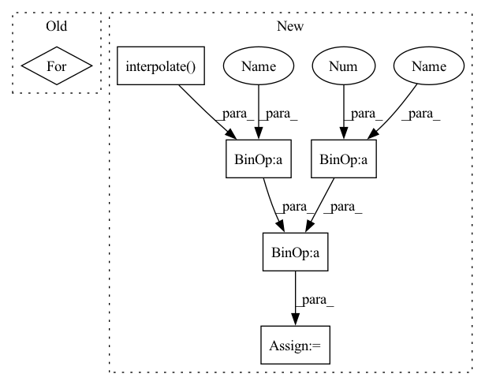

Pattern ID :29844
Before Change
height, width, _ = config["image_shape"]
mask = torch.ones(x.size(0), 1, x.size(2), x.size(3))
temp = torch.ones(x.size(0), 1, x.size(2), x.size(3))
for i in range(x.size(0)):
mask_temp = Masks.get_ff_mask(height, width)
mask_temp = torch.from_numpy(mask_temp)
mask[i,:,:,:] = temp[i,:,:,:] * mask_temp
if x.is_cuda:After Change
// TODO: Matching the mosaic patch size and the mask size
mosaic_unit_size = config["mosaic_unit_size"]
downsampled_image = F.interpolate(x, scale_factor=1. / mosaic_unit_size, mode="nearest")
upsampled_image = F.interpolate( downsampled_image, size=(height, width), mode="nearest")
result = upsampled_image * mask + x * (1. - mask )
else:
raise NotImplementedError("Not implemented mask type.")
In pattern: SUPERPATTERN
Frequency: 3
Non-data size: 6
Instances Fragment ID: 88340485
Project Name: sayednadim/global-and-local-attention-based-free-form-image-inpainting
Commit Name: 2e453ae0b658395a88acb8db67115db86d9274ea
Time: 2020-08-16
Author: smnadimuddin@gmail.com
File Name: model/mask.py
M Class Name: AnonimousClass
N Class Name: AnonimousClass
M Method Name: mask_image(2)
N Method Name: mask_image(2)
M Parent Class:
N Parent Class:
M File Name: model/mask.py
N File Name: model/mask.py
M Start Line: 40
M End Line: 48
N Start Line: 56
N End Line: 72
Before Change
height, width, _ = config["image_shape"]
mask = torch.ones(x.size(0), 1, x.size(2), x.size(3))
temp = torch.ones(x.size(0), 1, x.size(2), x.size(3))
for i in range(x.size(0)):
mask_temp = Masks.get_ff_mask(height, width)
mask_temp = torch.from_numpy(mask_temp)
mask[i,:,:,:] = temp[i,:,:,:] * mask_temp
if x.is_cuda:After Change
def mask_image(x, config):
height, width, _ = config["image_shape"]
max_mask = x.shape[0]
mask = random_mask(max_mask)
if x.is_cuda:
mask = mask.cuda()
if config["mask_type"] == "hole":
result = x * (1. - mask)
elif config["mask_type"] == "mosaic":
// TODO: Matching the mosaic patch size and the mask size
mosaic_unit_size = config["mosaic_unit_size"]
downsampled_image = F.interpolate( x, scale_factor=1. / mosaic_unit_size, mode="nearest")
upsampled_image = F.interpolate(downsampled_image, size=(height, width), mode="nearest")
result = upsampled_image * mask + x * (1. - mask)
else:
raise NotImplementedError("Not implemented mask type.")
Fragment ID: 88340469
Project Name: sayednadim/global-and-local-attention-based-free-form-image-inpainting
Commit Name: 2e453ae0b658395a88acb8db67115db86d9274ea
Time: 2020-08-16
Author: smnadimuddin@gmail.com
File Name: model/mask.py
M Class Name: AnonimousClass
N Class Name: AnonimousClass
M Method Name: mask_image(2)
N Method Name: mask_image(2)
M Parent Class:
N Parent Class:
M File Name: model/mask.py
N File Name: model/mask.py
M Start Line: 40
M End Line: 48
N Start Line: 56
N End Line: 72
Before Change
def mask_image(x, config):
height, width, _ = config["image_shape"]
mask_all = []
for i in range(x.size(0)):
mask = Masks.get_ff_mask(height, width)
mask_all.append(mask)
mask = torch.from_numpy(np.asarray(mask_all)).unsqueeze(1).float()
ones = torch.ones(x.size(0), 1, x.size(2), x.size(3))After Change
max_mask = x.shape[0]
mask = random_mask(max_mask)
if x.is_cuda:
mask = mask.cuda()
if config["mask_type"] == "hole":
result = x * (1. - mask)
elif config["mask_type"] == "mosaic":
// TODO: Matching the mosaic patch size and the mask size
mosaic_unit_size = config["mosaic_unit_size"]
downsampled_image = F.interpolate( x, scale_factor=1. / mosaic_unit_size, mode="nearest")
upsampled_image = F.interpolate(downsampled_image, size=(height, width), mode="nearest")
result = upsampled_image * mask + x * (1. - mask)
else:
raise NotImplementedError("Not implemented mask type.")
Fragment ID: 88340491
Project Name: sayednadim/global-and-local-attention-based-free-form-image-inpainting
Commit Name: aaa17ed332dc95db0f5900a43be179e26569b50c
Time: 2020-08-16
Author: smnadimuddin@gmail.com
File Name: model/mask.py
M Class Name: AnonimousClass
N Class Name: AnonimousClass
M Method Name: mask_image(2)
N Method Name: mask_image(2)
M Parent Class:
N Parent Class:
M File Name: model/mask.py
N File Name: model/mask.py
M Start Line: 40
M End Line: 49
N Start Line: 56
N End Line: 72
Before Change
def forward(self, x, alpha, fac1):
out = x
out2 = fac1 * torch.exp(-1.0 * alpha)
for i, layer in enumerate(self.fc_layers):
out = layer(torch.cat([out, out2], dim=1))
return self.fc_out(torch.cat([out, out2], dim=1))
After Change
def forward(self, x, alpha, fac1):
out = x
out2 = torch.exp(-F.interpolate( alpha[:, None], self.in_feat) )[:, 0]
out2 = out2 * fac1 + (1 - fac1)
return self.fc_out(out * out2)
Fragment ID: 88340473
Project Name: sungbinlim/neuboots
Commit Name: d406d3694ab25140dafeb3f2af61335a50011a32
Time: 2020-09-25
Author: phelahab@gmail.com
File Name: models/gbsnet.py
M Class Name: GbsCls
N Class Name: GbsCls
M Method Name: forward(4)
N Method Name: forward(4)
M Parent Class: nn.Module
N Parent Class: nn.Module
M File Name: models/gbsnet.py
N File Name: models/gbsnet.py
M Start Line: 34
M End Line: 38
N Start Line: 32
N End Line: 35